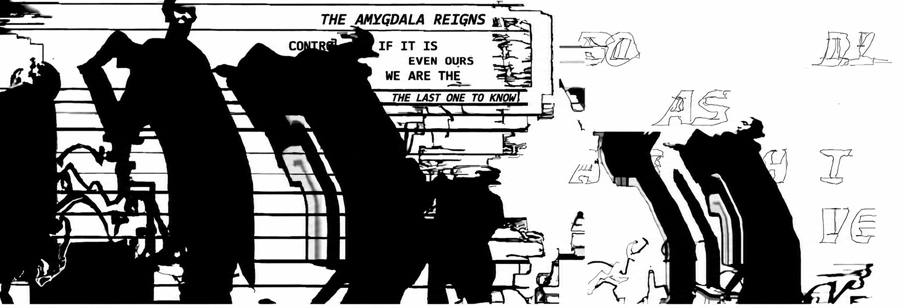
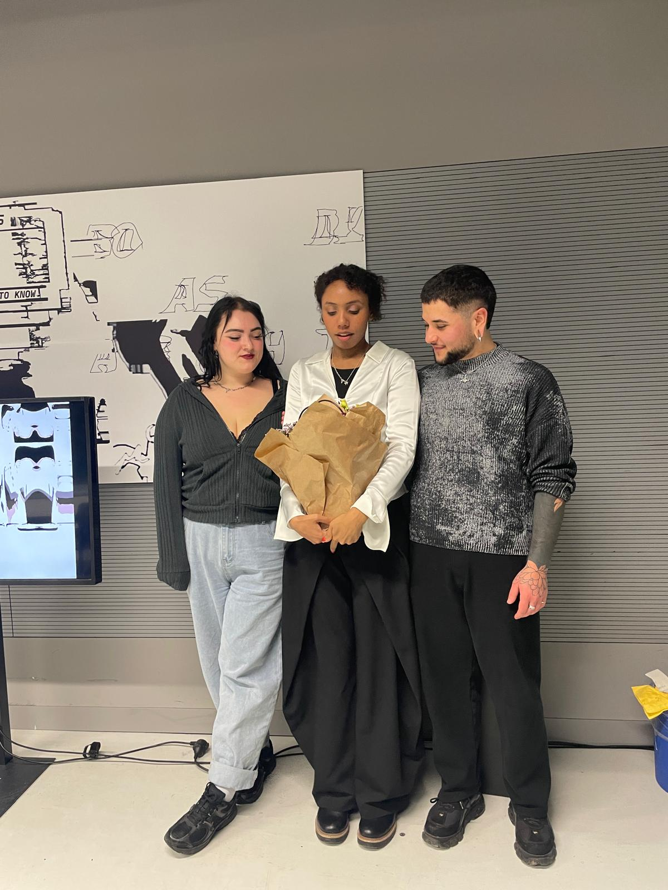
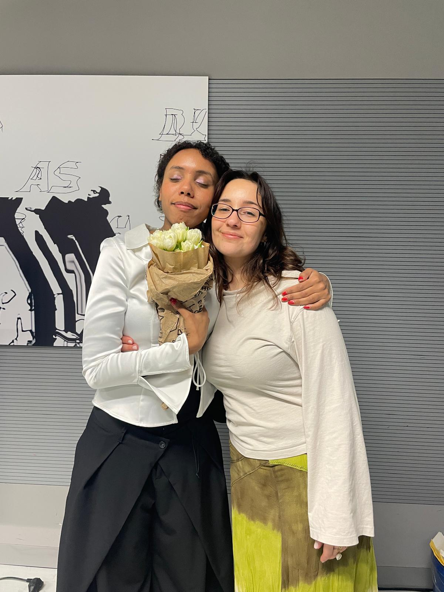
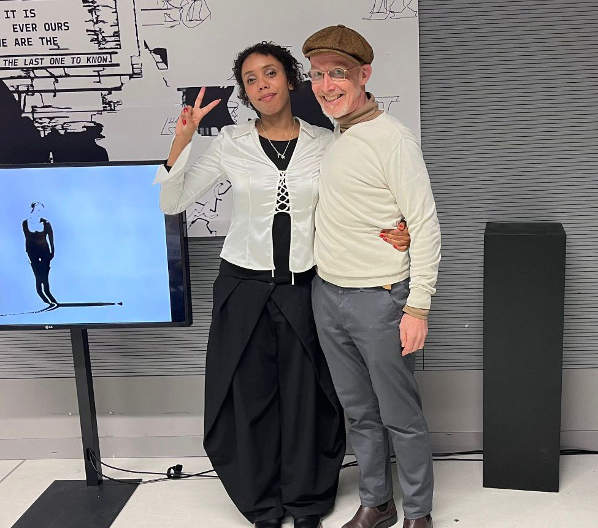
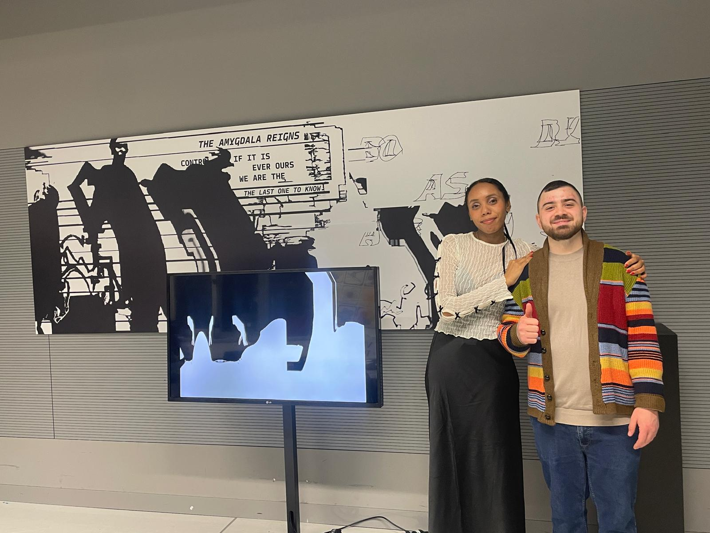
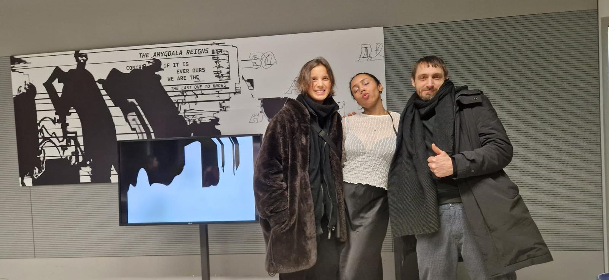
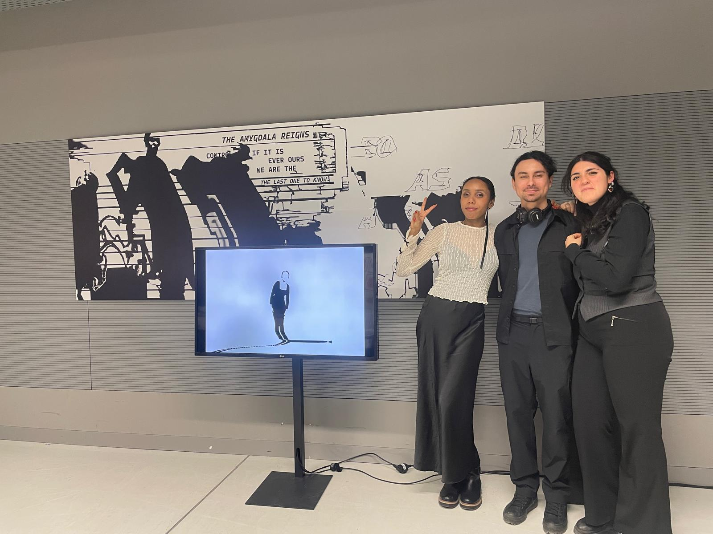
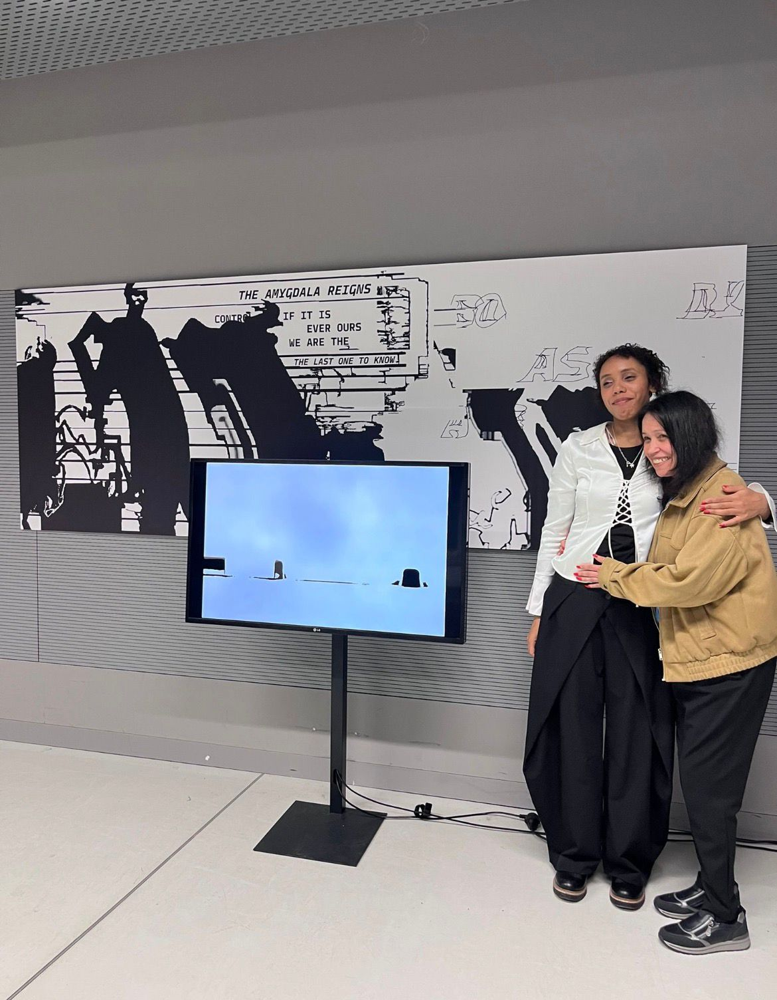
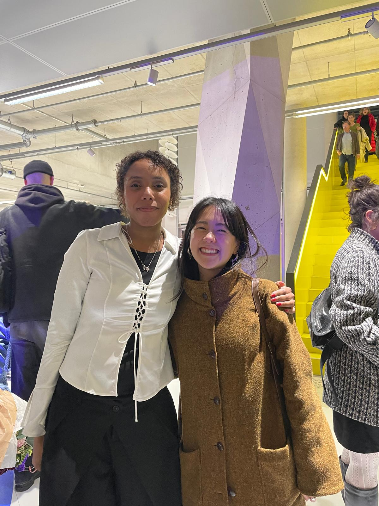

AMYGDALA - BODY AS ARCHIVE
This thesis investigates how the amygdala generates emotional and bodily responses before they can be articulated in language. It examines how raw impulses such as tension, repetitive movements, or sudden bodily reactions can be translated into nonverbal design, using movement, rhythm, visual abstraction, experimental typography, asemic writing, and choreographic methods.
By combining theoretical research with practice-based experimentation, it proposes alternative communication systems that visualize these preverbal, embodied states. The work seeks to make the unseen, pre-conscious signals of the body perceptible, offering new ways to communicate experiences rooted in the brain's emotional core.

Videos
Installation Werkschau


Process
Body Studies
Photos by Cansu Arslan


Visitors










